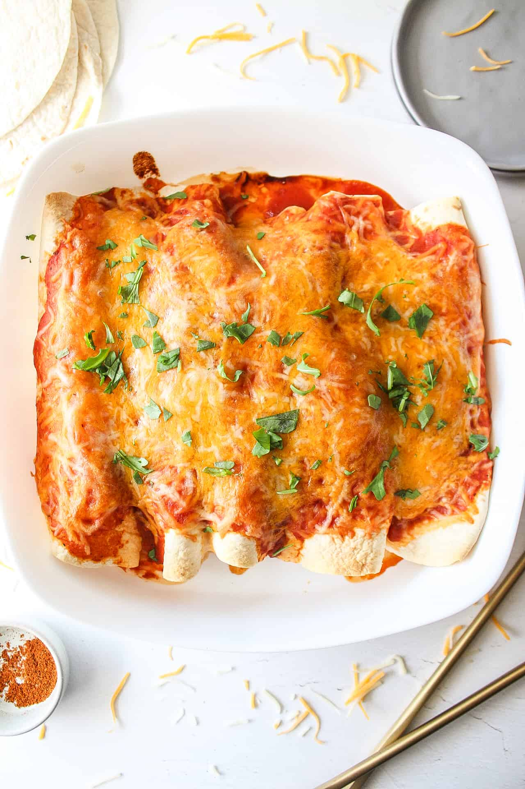

Chicken Enchiladas

Dang these enchiladas look tasty
Chicken enchiladas with jalapenos, black beans, onions, garlic, and a spicy enchilada sauce.
Ingredients
Sauce
- 2 tablespoons coconut or olive oil
- 4 tablespoons chili powder
- 1 teaspoon cumin
- 1/2 teaspoon oregano
- 2 cups chicken stock
- 21/2 tablespoons all-purpose flour
Enchiladas
- 750g boneless, skinless chicken breast
- 1 tablespoon coconut or olive oil
- 1 large white onion
- 2 cloves of garlic
- 3 to 4 jalapenos based on spice tolerance. Can use a couple serrano peppers for extra spice.
- 540 ml can of black beans
- 1 tablespoon coarse salt/li>
- 5 flour tortilla wraps
- 200g shredded cheese, cheddar or mozza
- 1/2 cup chopped cilantro
- Sour cream
Make It
- Preheat the oven to 380 degrees F (193 degrees C).
- In a large frying pan on a medium heat, add one tablespoon of coconut or olive oil. This pan will be for the onions, garlic, jalapenos, and eventually, the chicken.
- In a separate pot on medium heat, add all sauce ingredients except for the chicken stock and flour. Mix together as best you can and let it heat up for a few minutes.
- Dice the onions and garlic and toss them in the frying pan. Stir every few mins until golden brown.
- Dice the jalapenos and set them aside.
- Add the chicken stock to the sauce pot. Stir and let it heat up to a medium temperature.
- Chop the chicken up into chunks and salt them with coarse salt.
- When the onions and garlic are golden brown, add the chicken and jalapenos to the frying pan. Stir and flip the chicken as needed until cooked through.
- Turn the heat to low on the sauce pot. Sift the flour into the sauce mixture and whisk as you go until all the flour is added. It's important to whisk quickly and thoroughly to avoid lumps.
- Rinse the black beans in cold water.
- Lay out the tortillas on a clean surface. Add a couple dollops of enchilada sauce on each tortilla and spread it around.
- Add the chicken, onions, and jalapenos to the torillas. Add the black beans. Add some shredded cheese to each tortilla.
- Wrap each tortilla and place side by side in an oven-safe pan. Smother the tortillas with the remaining saiuce and sprinkle the remaining cheese on top.
- Place in the oven for 25 minutes.
- Serve with sour cream, cilantro, and your favourite hot sauce!